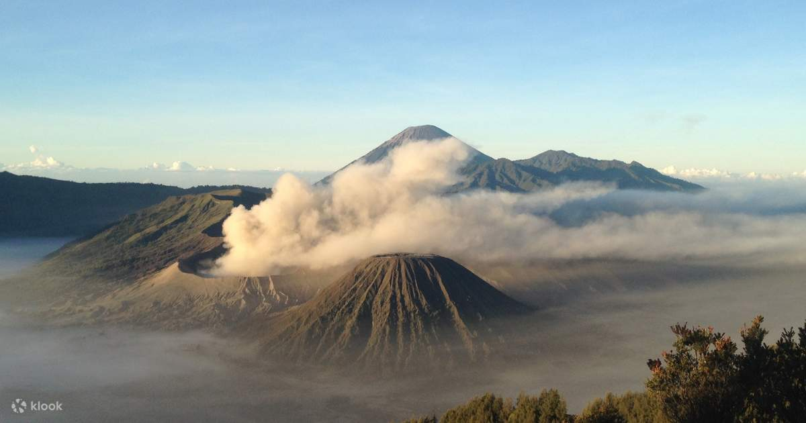
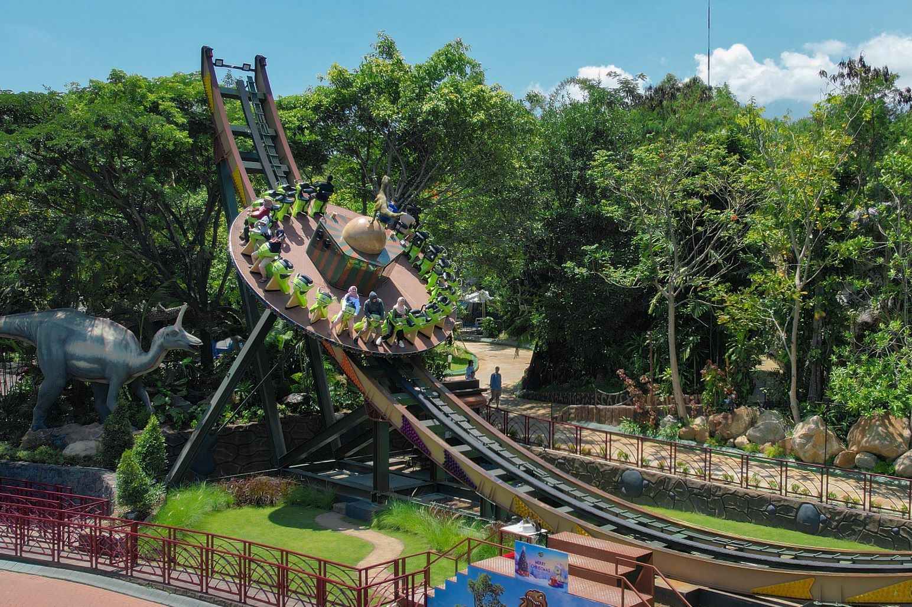
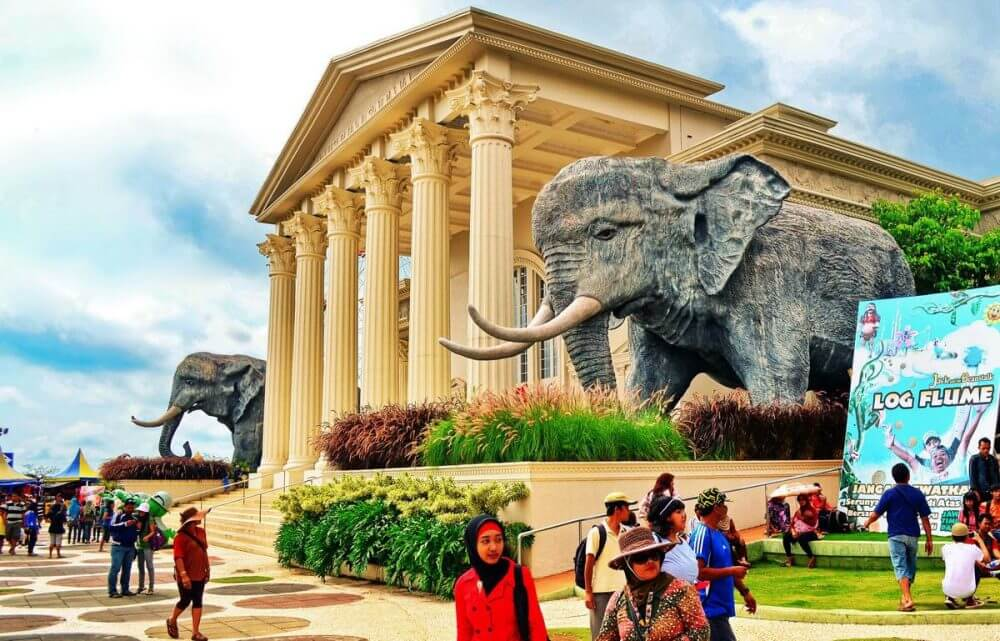
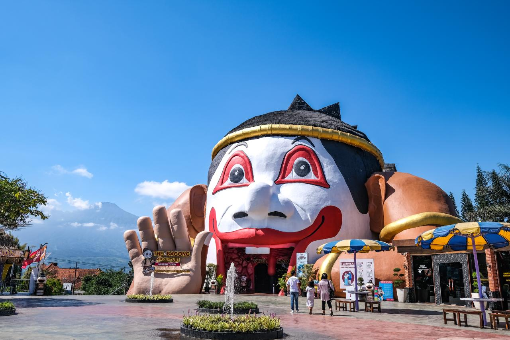

Sejarah

Kota Malang Wilayah cekungan Malang telah ada sejak masa Prasejarah sebagai kawasan pemukiman. Banyaknya sungai yang mengalir di sekitar tempat ini membuat wilayah Malang menjadi kawasan pemukiman.
Kota ini merupakan kota terbesar kedua di Jawa Timur setelah Surabaya, dan kota terbesar ke-12 di Indonesia.
Kota Malang Wilayah cekungan Malang telah ada sejak masa Prasejarah sebagai kawasan pemukiman. Banyaknya sungai yang mengalir di sekitar tempat ini membuat wilayah Malang menjadi kawasan pemukiman.

Kota Malang terletak di tengah-tengah Kabupaten Malang dan sisi selatan Pulau Jawa. Kota ini memiliki ;uas sebesar 145,28 Km2.
Kota Malang ini dibatasi oleh Kecamatan Singosari dan Kecamatan Karangploso di sisi utara; Kecamatan Pakis dan Kecamatan Tumpang di sisi timur.
Apa yang terpikirkan oleh kamu saat mendengar kota Malang? Sejuk? Benar. Malang berada di daerah pegunungan, sehingga membuat udaranua relatif sejuk dan menjadikannua salah satu tempat tujuan wisata tervaforit di Jawa Timur.

Jatim Park 3 adalah kompleks wisata modern bertema futuristik dan sejarah dunia. Di sini, pengunjung dapat menjelajahi zaman dinosaurus, dunia artis dunia (The Legend Stars), hingga museum musik dan virtual reality park.

Jatim Park 2 terdiri dari Batu Secret Zoo, Museum Satwa, dan Eco Green Park (terhubung di area yang sama). Tempat ini berfokus pada dunia hewan, konservasi, dan ekosistem.

Jatim Park 1 adalah taman hiburan yang menggabungkan wahana permainan seru dengan pembelajaran interaktif. Cocok untuk anak-anak hingga orang dewasa.